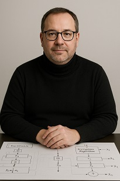
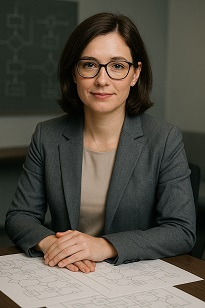
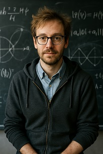
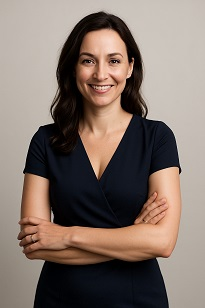
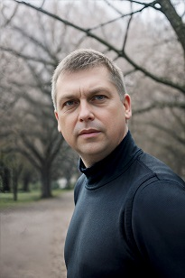

Věříme, že i technologie si zaslouží lidskou tvář – nebo alespoň virtuální.
Naši čtyři kolegové nejsou z masa a kostí, ale vznikli kombinací algoritmů a kreativity.
Každý z nich má svou osobnost, odbornost a tvář, která nám pomáhá komunikovat složitá témata srozumitelně a s nadhledem.
A Jaroslav? Ten je skutečný.

Marek Pail
Technický ředitel (CTO)
Postkvantová kryptografie, preciznost a klid.

Lucia Saitová
Compliance & regulace
Právo, standardy NIST, ostrá logika i empatie.

Daniel Kainar
Kvantový výzkum
Superpozice nápadů i nepraktických poznámek.

Aida Blažková
Adopce technologií
Infografiky, onboarding a lidský přístup.

Jaroslav Hercík
Zakladatel & CEO
Vizionář s vášní pro bezpečnost i vyprávění.